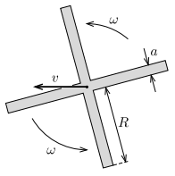

X18 (2018) — English translation
In this problem we will study the movement of a boomerang. Its exact movement is difficult to describe, but with certain assumptions we can understand why the boomerang returns to the point of throwing. Consider a symmetrical cross-shaped boomerang with a uniform mass distribution. The total mass of the boomerang is $M$, the length and width of the blades are $R$ and $a\ll{R}$, respectively. The thickness of the boomerang can be neglected in comparison with these values. The boomerang is thrown so that its plane is vertical. As a result of the throw, the boomerang begins to rotate with an angular velocity of $\omega$ relative to the axis of symmetry perpendicular to the boomerang plane. The center of mass of the boomerang begins to move with a horizontal speed $v$, lying in the plane of the boomerang. During movement, a hydrodynamic force acts on the boomerang blades. This force is perpendicular to the plane of the blades. If the boomerang rotates as shown in the figure, then this force is directed away from us. The hydrodynamic force acting on a small element of the blade area $\Delta{A}$ is equal to $$F={\gamma}v^2_{\perp}\Delta{A}{.} $$где $v_{\perp}$ – компонента скорости воздуха относительно этого элемента площади, направленная перпендикулярно краю лопасти. Постоянная $\gamma$ is proportional to the air density (which is considered constant) and depends on the shape of the boomerang. The occurrence of this hydrodynamic force is due to a slight bending of the surface of the boomerang, as a result of which the air incident on its surface acts on the surface in a direction perpendicular to it. The bending of the boomerang surface can be neglected within the framework of this problem. You can also neglect gravity and air resistance.

Source: https://pho.rs/p/316